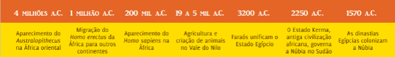
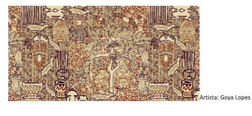
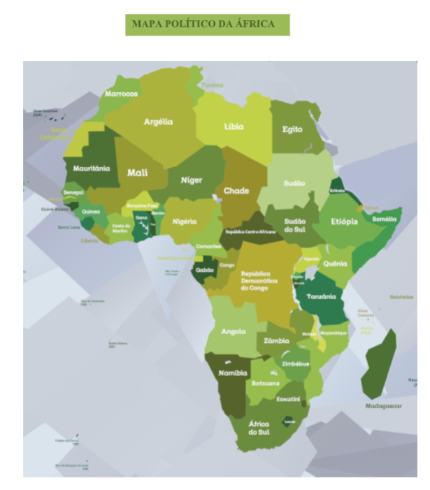

Capítulo 5: África: Novo olhar sua economia e sua cultura
Questão:O continente origem da vida humana, cenários da vida selvagem, negros, safaris, abusos coloniais europeus, violência do tráfico de gente e do contrabando de minérios, tambores e cores, arte e literatura originais. Um mundo que também fala nosso idioma, a África lusófona. A África que nutriu o Brasil de gente prisioneira por quase 400 anos, capturada e transplantada, escravos negros africanos, hoje brasileiros. E o racismo? E o peso da miséria, em uma disputa histórica desigual? E o valor dos legados culturais que estão no coração da identidade brasileira? Olhamos sempre de fora e de longe. Que se dirá, portanto, para continente e nações distantes um oceano, o Atlântico, que nos separa e aproxima?
Contextualizando – Indústria Petroquímica na ÁfricaUm dos locais promissores para a exploração de petróleo e gás neste ano – a costa da África do Sul – acaba de produzir um enorme gás natural e condensado que pode abrir uma nova província de exploração de petróleo e mudar a energia da África do Sul. A maior companhia francesa disse nesta semana que fez uma descoberta significativa sobre as perspectivas de Brulpadda na costa sul da África do Sul. “Com esta descoberta, a Total abriu um novo jogo de gás e petróleo de classe mundial e está bem posicionada para testar várias perspectivas de follow-on no mesmo bloco”, disse Kevin McLachlan, vice-presidente sênior de exploração da Total. De acordo com o executivo-chefe da Total, Patrick Pouyanne, a descoberta poderia conter 1 bilhão de barris de óleo equivalente de recursos de gás e condensado. A operadora da licença, Total, e seus parceiros Qatar Petroleum, CNR International, e o consórcio sul-africano Main Street, agora planejam adquirir dados sísmicos 3D este ano, seguidos de até quatro poços de exploração na licença. “É emocionante para o nosso país que esta descoberta tenha sido feita. É potencialmente um grande impulso para a economia, e congratulamo-nos com ele, enquanto continuamos a buscar investimentos para crescer a nossa economia “, o ministro de Recursos Minerais da África do Sul Gwede Mantashe disse , comentando sobre a grande descoberta de gás.
Fonte: https://www.opetroleo.com.br/descoberta-de-petroleo-na-africa-do-sul-pode-ser-um-fator-de- mudanca/
Para conhecer o outro, portanto, é preciso antes saber que há dois pontos de vista: o nosso e o dele. Há mesmo três pontos de vista: o nosso, o dele e o de outros. A África foi e é vítima de numerosas imagens que a descrevem como selvagem; nesta condição, está historicamente exposta à voracidade exploratória estrangeira há séculos e, também, na atualidade. Mas a África é também protagonista de culturas riquíssimas, e chegou a hora de conhecê-la, ouvir o que ela mesma tem a dizer. No continente africano, o grande motivador dos conflitos é o modo pelo qual o continente foi dividido. Antes da chegada dos europeus, os africanos viviam em harmonia, pois os grupos rivais se respeitavam e isso não motivava instabilidade. No processo de colonização, os países europeus se reuniram em Berlim, em uma conferência, para definir a divisão do espaço africano, para que esse fosse administrado e explorado pelas nações envolvidas na reunião. Acompanhe ao longo do capítulo a linha do tempo:
Para Saber Mais
Para conhecer mais e melhor o continente africano, baixe o Ebook “Diálogos com a Geração Z – África, Um continente Globalizado”
Disponível em:
Entretanto, as fronteiras impostas pelos europeus não levaram em consideração as diferenças étnicas existentes no continente. Esse ato equivocado gerou a separação de grupos aliados, "união" de grupos rivais e assim por diante. Ao serem agrupados de forma desorganizada e sem analisar a estrutura social, cultural e religiosa, gerou-se uma grande instabilidade em vários pontos da África.
Tentativas da União Africana - um bloco de países africanos - para encerrar o conflito resultaram em um tratado de paz, assinado em 2006. O governo do Sudão apoiou o tratado, mas apenas uma facção, a do rebelde Minni Minawi, assinou o acordo. No tratado, o governo concorda em desarmar os Janjaweed, mas até agora pouco foi feito.
África é um dos seis continentes do mundo, sendo o terceiro maior em extensão territorial. O território estende-se por mais de 30 milhões de km 2 , ocupando, aproximadamente, 20% da área continental da Terra. No continente vivem mais de um bilhão de habitantes, fazendo dele o segundo mais populoso entre os demais. A África é conhecida pela sua pluralidade étnica e cultural, e, por meio de uma história milenar, é capaz de contar a história de toda a humanidade. Apesar da enorme riqueza do continente, muitos países africanos apresentam baixos índices de desenvolvimento , com diversos problemas sociais, como a miséria, baixas qualidade de vida , subnutrição e o analfabetismo. Os países africanos dividem-se em duas principais regiões — o Norte da África e a África subsaariana;
As Múltiplas ÁfricasÁFRICA SETENTRIONAL Também chamada de África do norte ou “África branca”, compreende os países localizados ao norte: Marrocos, Tunísia, Argélia, Líbia, Sudão, Saara Ocidental e Egito. A taxa de crescimento da região caiu para 0,61% em 2011 contra 4,4% em 2010. A má situação econômica abriu caminho para os radicais islamitas, que preocupam pelo uso da violência, a exemplo dos salafistas. A região vem sofrendo grandes mudanças motivadas pela Primavera Árabe. Alguns Países: Marrocos: monarquia constitucional; Tunísia: Estado unitário; Argélia: república semipresidencialista; Líbia; Egito: República Semipresidencialista;
ÁFRICA OCIDENTAL - A pobreza e a falta de oportunidades econômicas são as causas mais citadas para explicar a contínua instabilidade na África ocidental, região em que habitam 340 milhões de pessoas e estão 10 dos 25 países mais pobres do mundo. Entretanto, a Nigéria está numa fase de rápido crescimento, foi o país mais cotado para integrar o Brics e se tornar a maior liderança da África, atraindo cada vez mais investimentos. Dos países dessa região, apenas Cabo Verde, Gana e Senegal não sofreram golpes de Estado nas últimas décadas. Alguns países: República Islâmica da Mauritânia: república islâmica;Cabo Verde: república parlamentarista; República do Gana: república presidencialista; República Federal da Nigéria: república presidencialista; Guiné-Bissau: república parlamentarista;
ÁFRICA CENTRAL - A República Democrática do Congo vive uma guerra que se estende há mais de dez anos na qual estão comprometidos interesses econômicos de diversos países. Não é o caso da Angola, que tenta consolidar sua democracia. Em agosto de 2012, os angolanos foram às urnas pela terceira vez na história do país e escolheram, numa eleição transparente, o presidente José Eduardo dos Santos, no poder há quase 33 anos. Algumas das mudanças pelas quais o país está pasando são extremamente visíveis, como os avanços na saúde pública e na reconstrução de estradas. Alguns países: República Democrática do Congo (anteriormente Zaire): república semipresidencialista; Angola: república presidencialista; República do Congo (chamada Congo-Brazavile para se distinguir da vizinha República Democrática do Congo): república presidencialista; Camarões: república parlamentarista; São Tomé e Príncipe: república semipresidencialista;
ÁFRICA ORIENTAL - Formada por Comores, Djibuti, Eritreia, Etiópia, Quênia, República do Maurício, Seicheles, Somália, Tanzânia, Burundi, Ruanda, Uganda, ilha Reunião (área francesa no oceano Índico) e Mayotte (área francesa no Arquipélago das Comores). E, ainda, Moçambique, Madagascar, Zimbábue, Zâmbia e Malawi, que são frequentemente consideradas parte da África meridional. É difícil encontrar unidade entre tantos países, mas muitos compartilham de políticas ou histórias similares, que integram as culturas do Índico. Falta de desenvolvimento político e democracia, além de inúmeros conflitos, são algumas das experiências compartilhadas. Os constantes pedidos de ajuda internacional para saldar débitos e organizar suas legislações comerciais, propiciam uma maior influência externa nesses países. Alguns países: Zimbábue: república semipresidencialista; Etiópia: república parlamentarista; Ruanda: república; Uganda: república; Moçambique: república presidencialista;
ÁFRICA AUSTRAL - Também chamada de África meridional, é a parte sul do continente, formada pela África do Sul, Botswana, Lesoto, Namíbia e Suazilândia. A entrada da África do Sul na cúpula dos Brics, em 2010, foi relevante para o continente, já que indiretamente inclui no bloco a agenda africana. A África do Sul se posiciona como uma potência regional, contribuindo para a possibilidade de ascensão de outros países da região. Mesmo com todos os desafios socioeconômicos, os investidores internacionais estão voltando seus olhares para países como a Nigéria, que já mostra taxas de crescimento expressivas. Alguns países: África do Sul: república presidencialista; Namíbia: república parlamentarista;
